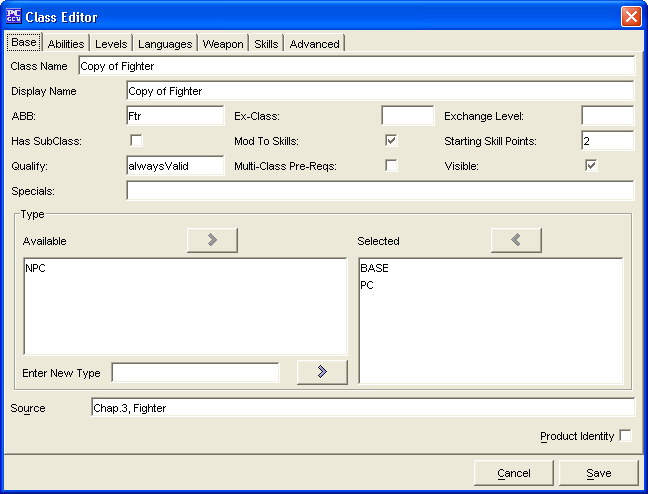

The Class Editor is to used to create/edit your own Classes.
The Base Tab has everything required to make a simple Class. The remaining tabs are for more advanced Class creation. The Classes created will be saved into the data/custom directory under the name of customClasses.lst.
The Class Name is where you will enter the name that you want to print.
The Display Name is where you will enter the name that you want displayed in PCGen.
The ABB is a 3-5 letter abbreviation of the class name.
The Ex-Class is the class to which all current class levels are converted if the class prerequisites are no longer met.
The Exchange Level allows the exchange of levels from the current class to the specified class.
The Has SubClass flag indicates whether or not this class can choose a specialty or subclass.
The Mod To Skills flag indicates monster types that do not get their Intelligence modifiers for skills they get from gaining hit dice.
The Starting Skill Points is how many skill points a character gains per level.
The Qualify field is a text description that is usually "alwaysValid". It can list exceptions to perquisites.
The Multi-Class Pre-Reqs flag is selected when all Pre-Requisites are valid only if the character would be multi-classing into that class (i.e. there are no pre-reqs for choosing this as the first class).
The Visible is a flag that determine whether the class is hidden or not.
The Specials is a | (pipe) and , (comma) delimited tag that is used to tell PCGen what special ability the class gets, (Uncanny Dodge|Rogue) the level adjustment of the ability ( |0| ) and finally, what levels the class gets the special ability at (2,6,11,14,17,20).
The two Type windows, Available and Selected are used to create a list of types that the Class is a member of.
The Source field is a text window for listing what source material the Class is from. (If it is a custom created Class, then you can leave this blank or simply put in "custom")
The Product Identity checkbox is to denote if the Class's name being created is the Product Identity of a publisher
The Cancel and Save buttons, which appear on every tab, are used to either cancel the Class creation or save it to the customClasses.lst file.